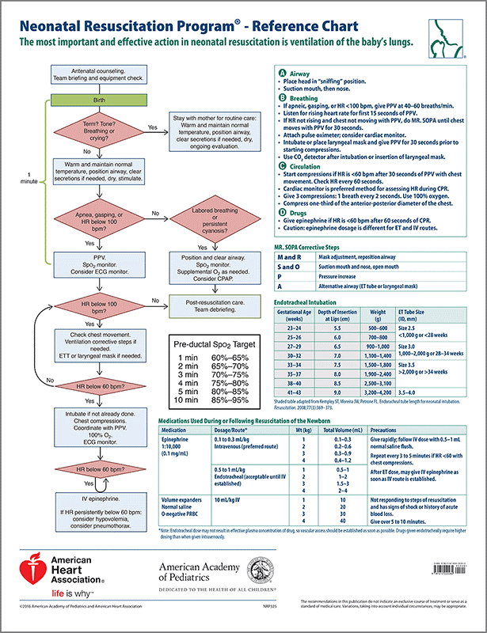

21.0 NEWBORN RESUSCITATION
All Providers
- History: date/time of birth, prenatal history, birth history, estimated gestational age
- Exam: Respiratory rate and effort (grunting, retractions, gasping)
- Heart rate
- umbilical stump or brachial pulse, auscultation
- Muscle tone
- Color
- central cyanosis, acrocyanosis, pallor
- Apgar score
- not necessary to guide resuscitation
- Estimated gestational age
- Oxygen saturations
- target of 85-95% at 10 minutes of age
Patient Safety Considerations
- Hypothermia is common in newborns, ensure heat retention by drying thoroughly, covering head,
and wrapping in dry cloth
- When it does not encumber necessary intervention or assessment, skin-to-skin directly
against mother’s chest and wrapping together is an effective warming technique
- Hypoglycemia can be a complication of hypothermia, consider BS check after resuscitation
Key Considerations
- Approximately 10% of newborn infants require some assistance to begin breathing
- Low birth weight infants are at risk for hypothermia
- Preferred placement of saturation probe is right upper extremity
- Titrate oxygen to saturations of 85-95% at 10 minutes of age
- Increase in heart rate is a reliable indicator of effective resuscitative efforts
- Acrocyanosis, a blue discoloration of the distal extremities, is a common finding in the newborn
Pediatric
not to exceed adult dose
EMT
• Assist with resuscitation per guidelines
AEMT
Paramedic
